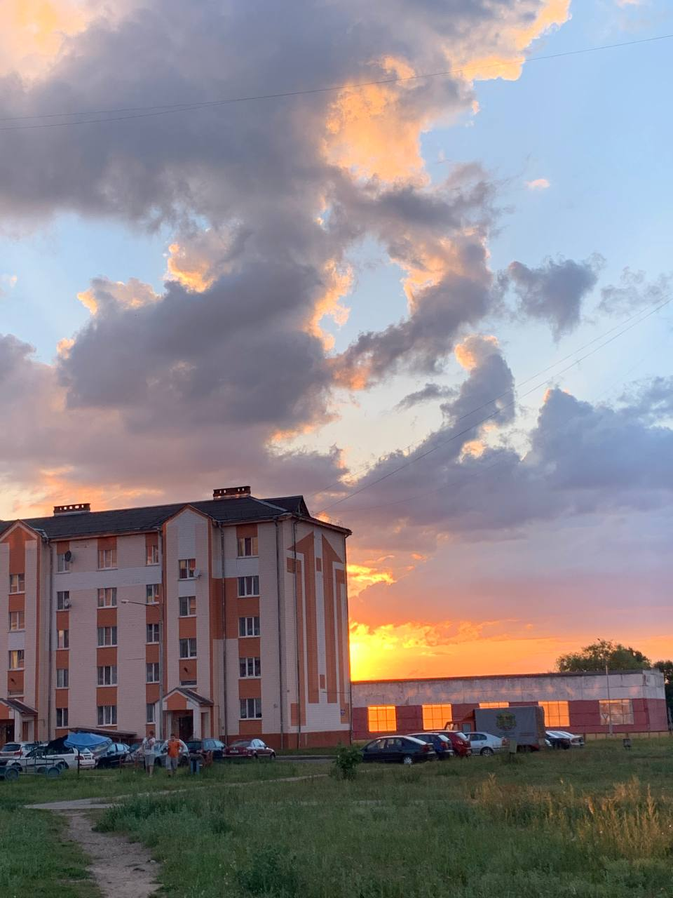
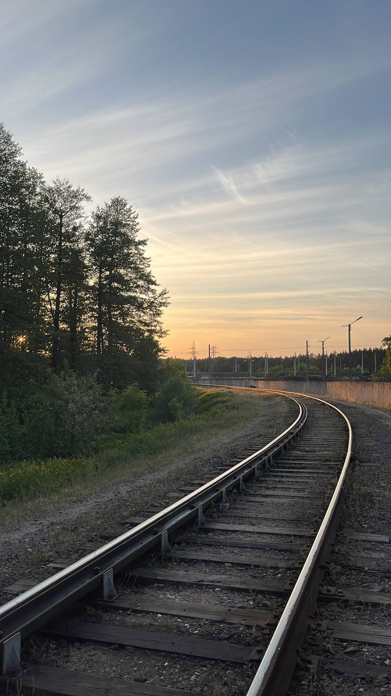
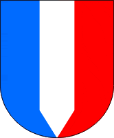
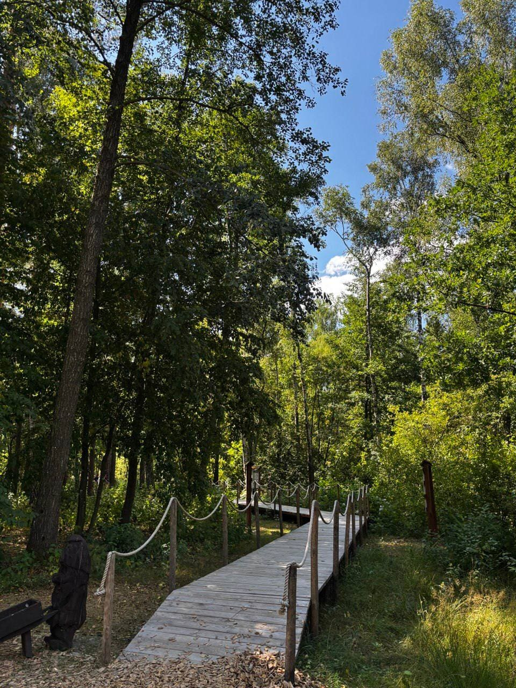
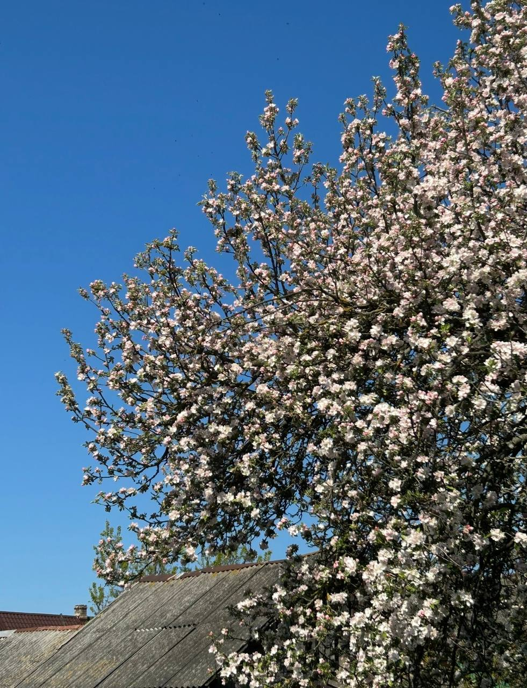
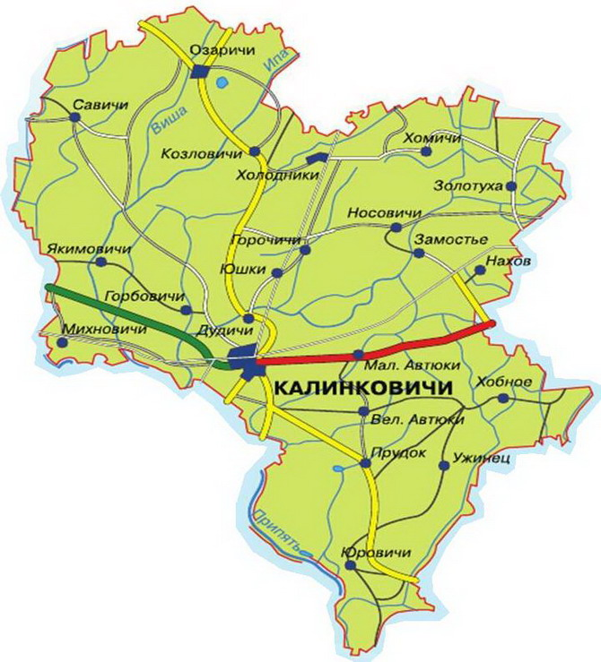

Калинковичи: город на перекрёстке дорог

Калинковичи — город в Гомельской области, который называют
«Полесским городом на стальных магистралях».
Здесь сходятся железные дороги, здесь живут люди с особым чувством юмора,
а рядом — земля, которая помнит мамонтов и древние города.
Это место, где история и современность идут рядом.
1. История города
Первое упоминание Калинковичей относится к 8 октября 1560 года —
в акте ревизии Мозырского повета.
Долгое время это была небольшая деревня, а в статистическом сборнике 1868 года
она значилась всего лишь как местечко.
Всё изменила железная дорога.

В 1882 году открылось движение по линии Брест — Брянск,
а в 1910 году её пересекла дорога Петербург — Одесса.
Калинковичи стали
важным железнодорожным узлом и начали быстро расти.
Уже в
1925 году они получили статус города.
Ключевые даты
- 1560 — первое письменное упоминание.
- 1882 — открытие движения по железной дороге.
- 1910 — Калинковичи становятся крупным железнодорожным узлом.
- 1925 — получение статуса города.
- 2002 — официальная регистрация герба и флага [citation:6].
Интересный факт: герб Калинковичей напрямую связан с железной дорогой.
Серебряная полоса в центре щита — это условное изображение локомотива,
несущегося по рельсам. Красный цвет означает развитие и борьбу,
голубой — водную стихию Полесья.

2. Достопримечательности
В Калинковичах и районе есть места, которые стоит увидеть.
Это не стандартный туристический набор — это настоящая история.
-
Музей-стоянка первобытного человека в Юровичах —
открыт в 2021 году на месте древнейшего поселения.
Люди жили здесь 26 тысяч лет назад.
В экспозиции — останки мамонта и панорама ледникового периода .
-
Краеведческий музей в Калинковичах —
четыре зала, более сотни экспонатов.
Особый интерес вызывает клад с монетами XVII века —
одна из крупнейших находок медных солидов в Беларуси
-
Церковь Казанской иконы Божией Матери —
семикупольный храм в ретроспективно-русском стиле.
Внутри — два резных деревянных иконостаса, что встречается нечасто [citation:17].
-
Памятник паровозу —
на привокзальной площади. Локомотив работал на грузоперевозках больше 30 лет
и напоминает о том, что город вырос именно благодаря железной дороге [citation:17].
-
«Тропа лесных чудес» —
экологическая тропа недалеко от Калинковичей.
Здесь живут пятнистые олени, фазаны, кролики,
а через мостки можно дойти до игровой зоны с деревянными качелями.

3. Символы города
Герб и флаг Калинковичей зарегистрированы в Гербовом матрикуле
Республики Беларусь 23 января 2002 года .
Герб:
испанский щит рассечён серебряным заострённым книзу столбом.
Правая часть — голубая, левая — красная.
Серебряная полоса символизирует железнодорожные пути,
собирающиеся в один узел. Голубой цвет — реки и озёра Полесья,
красный — развитие города и героизм жителей .
Флаг:
прямоугольное полотнище светло-голубого цвета с изображением герба.
А ещё у Калинковичей есть неофициальный символ —
калина. По древним славянским представлениям,
это дерево связано с родом, красотой и продолжением жизни.
В свадебных обрядах калину вплетали в венок невесты,
украшали ею каравай.

4. Расположение на карте
Калинковичи находятся на юго-востоке Беларуси, в Гомельской области,
в пределах Гомельского Полесья.
Город расположен на реке Припять и её притоках —
Ипе, Тремле, Неначи, Закованке .

Через Калинковичи проходят важные железнодорожные и автомобильные маршруты.
Каждые сутки через станцию проходят десятки составов.
5. Новости
Открытие «Тропы лесных чудес»
В мае 2026 года недалеко от Калинковичей открылась новая экологическая тропа.
Гостей встречают пятнистые олени, фазаны и кролики.
Всё сделано из дерева — от интерактивных досок до огромных шашек.
Посещение бесплатное
Развитие промышленности
Калинковичский район — один из промышленных лидеров юго-востока Беларуси.
Предприятия выпускают элитные сорта сыров, молочную и мясную продукцию,
а также эксклюзивную мебель
Музей в Юровичах
Музей-стоянка первобытного человека продолжает принимать посетителей.
Здесь можно увидеть останки мамонта и воссозданную панораму
жизни древних людей ледникового периода
6. Город сейчас
Калинковичи — это современный город с развитой экономикой.
Более 80% промышленного производства приходится на крупные предприятия.
- «БЕЛСЫР» — производит сыры, йогурты, масло. Экспортирует более 85% продукции.
- Калинковичский мясокомбинат — крупное перерабатывающее предприятие.
- Мебельный комбинат — выпускает более 250 наименований мебели.
- Железнодорожный узел — рабочие места для многих жителей города
В городе работают школы, больницы, культурные учреждения.
Калинковичи удостоены вымпела «За мужество и стойкость в годы Великой Отечественной войны».
7. Эстетика города и интересные факты
У Калинковичей есть особая любимая домашняя эстетика.
.png "город")
В Автюках (деревни Великие и Малые) с 1995 года
проводят фестиваль народного юмора.
Пропуском на фестиваль служит шутка или частушка .
Автюковцы называют себя «колосками» и «калинками».
А ещё здесь есть шуточный лозунг:
«Зачем Инстаграм и ТикТок, если есть автюковский юморок» .
За хорошим настроением- только в КАЛИНКОВИЧИ!
Полезные ссылки
Официальный сайт Беларуси
Центральная научная библиотека НАН Беларуси
Спасибо за внимание!
Калинковичи — город, который стоит узнать.